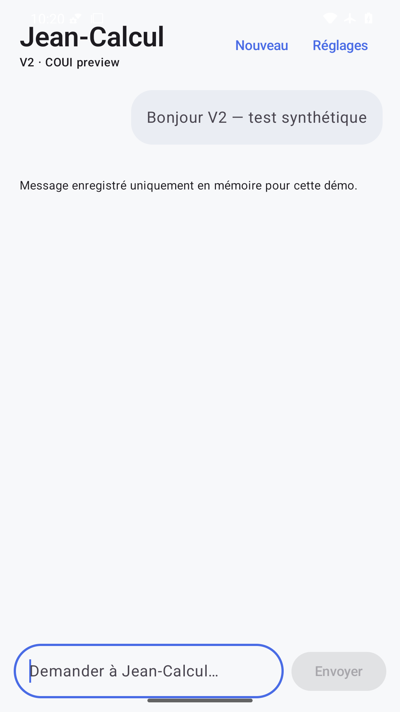
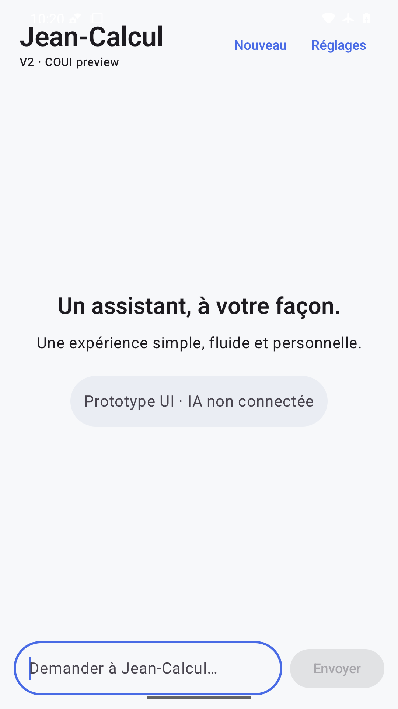
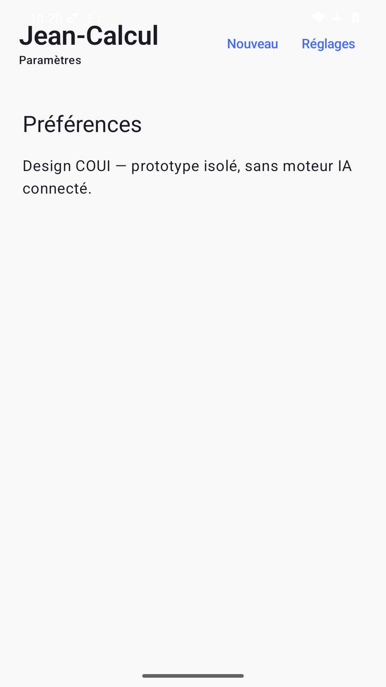
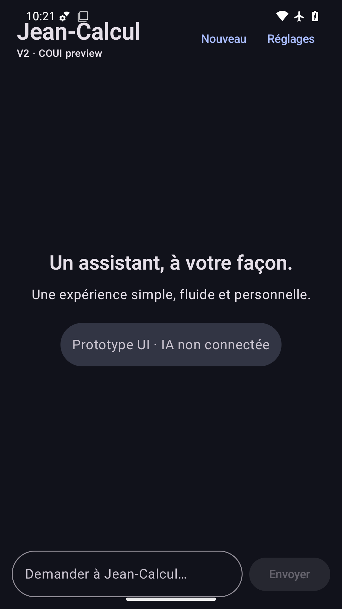
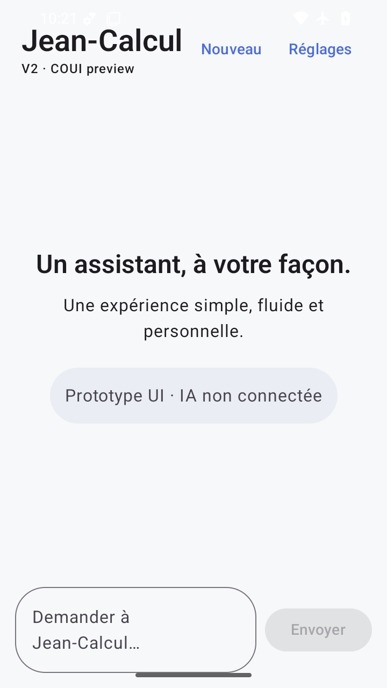
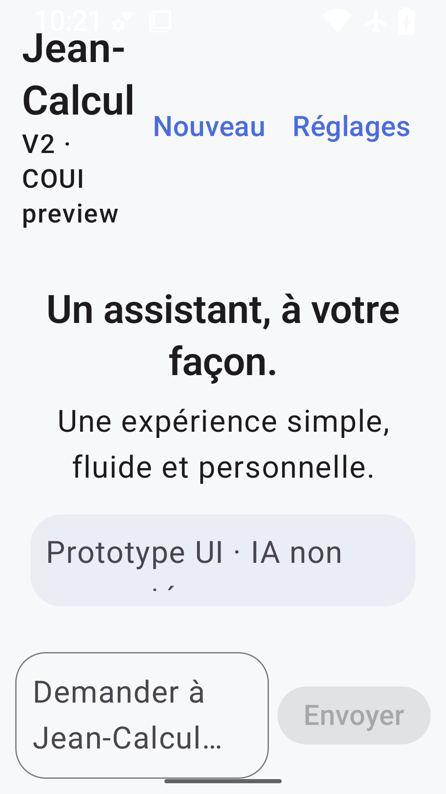
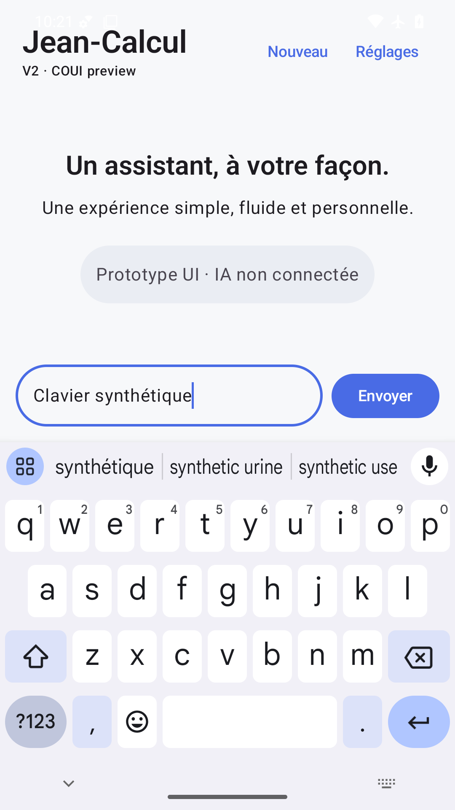
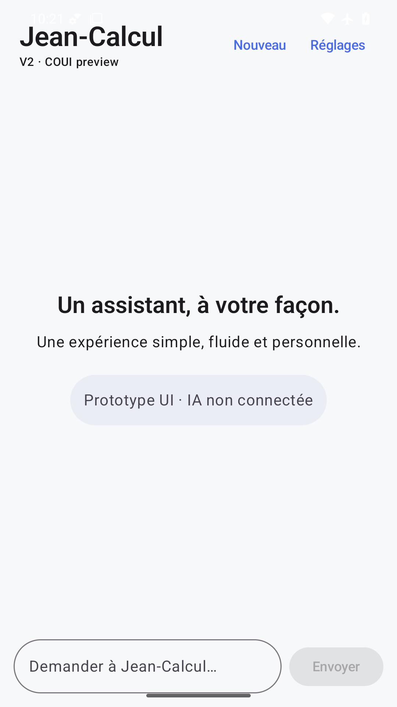
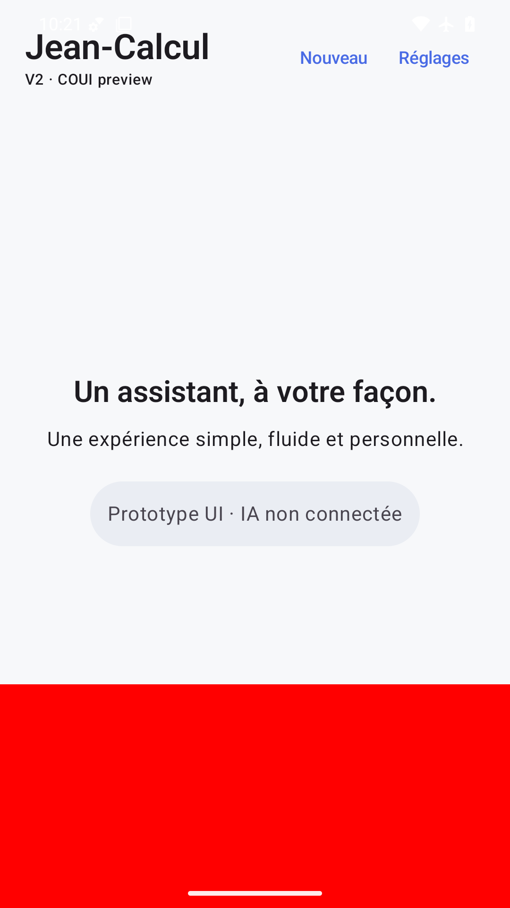

État vide lisible et saisie présente ; FAIL : icônes système blanches presque invisibles sur fond clair, saisie collée au geste de navigation.

Bulle synthétique et avertissement mémoire visibles ; FAIL : barre de statut sans contraste et marge de navigation insuffisante.

Message effacé et accueil restauré ; FAIL : mêmes défauts des barres système en clair.

Préférences et mention sans moteur IA visibles ; FAIL : statut blanc sur fond clair. Réglages volontairement limités au prototype.

Textes, puce et actions lisibles en sombre ; FAIL : champ trop proche de la barre de geste en bas.

360×640 dp : actions et texte lisibles, placeholder sur deux lignes ; FAIL : barre système sans contraste et saisie collée au geste.

FAIL : à 200 %, titre et sous-titre empilés sur plusieurs lignes, avertissement « IA non connectée » coupé verticalement ; barre système claire illisible.

Clavier réellement visible et envoi accessible au-dessus ; FAIL : statut sans contraste en clair.

État statique stable avec animations système désactivées ; FAIL : défauts de statut/navigation identiques à l’accueil clair. Fluidité non déduite du PNG.

FAIL volontaire détecté : rectangle rouge opaque sur toute la largeur basse, masque entièrement champ de saisie et bouton Envoyer.